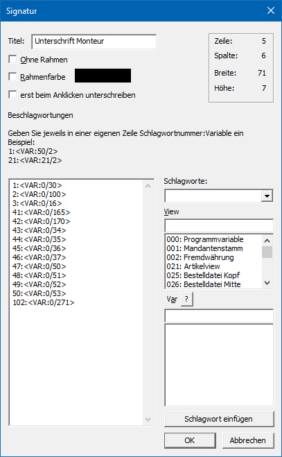
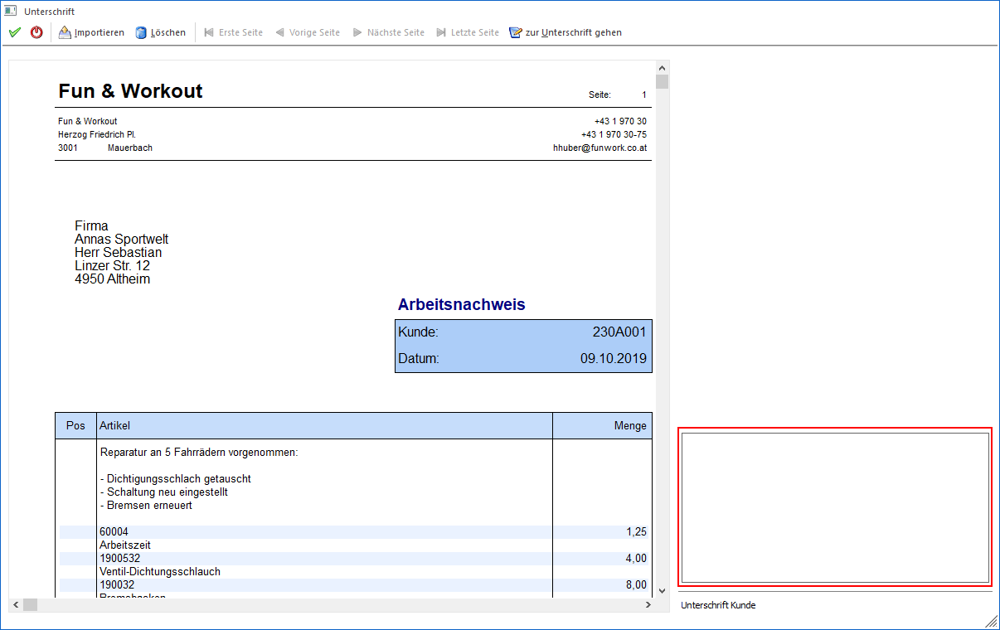

Ø Signatur
Signaturen ermöglichen den Einbau eines Bereichs im Formular, mit Hilfe dessen unterschrieben werden kann.
Achtung
Pro Formular kann nur 1 Signatur-Element platziert werden. Befindet sich solch ein Element bereits im Formular, dann steht die Funktion nicht mehr zur Verfügung.
Hinweis
Das Signieren wird im Normalfall über die WinLine mobile ausgeführt. Hierzu wird in einer Bildschirmanzeige (Anzeige des Formulars als SPL-Datei) das Signatur-Element angewählt, in dem Signaturfeld unterschrieben und der Ok-Button gedrückt. Die Ablage dieser Bildschirmanzeige inklusive Signatur erfolgt anschließend direkt und automatisch im WinLine Archiv.
Eigenschaftsfenster "Signatur
Über das Eigenschaftsfenster "Signatur" können unterschiedlichste Einstellungen für eine Signatur vorgenommen werden.

Ø Titel
Der Titel wird unter dem Strich im Signaturfeld dargestellt.
Ø Ohne Rahmen
Bei Aktivierung erhält das Signaturfeld keinen Rahmen.
Ø Rahmenfarbe
An dieser Stelle kann eine Rahmenfarbe für das Signatur-Element definiert werden.
Ø erst beim Anklicken unterschreiben
An dieser Stelle kann definiert werden, wann signiert / unterschrieben werden soll:
ü Option "deaktiviert"
Das
Signieren wird direkt im Anschluss an den Druck durchgeführt.
Hinweis
Zur optimalen Übersicht wird
während des Drucks der zu druckende Beleg dargestellt. Die Unterschrift kann im
rechten unteren Bereich des Fensters getätigt werden, wobei diese mit dem
Mauszeiger gezeichnet oder mittels "Importieren" eine Datei (Bild) der
Unterschrift eingefügt werden kann.

Achtung
Der Button "Ok" kann nur bestätigt werden, wenn man sich auf der Seite befindet, welche man gerade unterschreibt. Beim mehrseitigen Ausdruck wird das Signaturfenster für jede Seite einzeln geöffnet, nachdem bestätigt wurde. Hierzu gibt es auch den Button "zur Unterschrift gehen".
ü Option "aktiviert"
Zum Auslösen
des Signierens muss das Signaturelement in einer Bildschirmvorschau angewählt
werden.
Beschlagwortungen
Im Bereich "Beschlagwortungen" können Schlagwörter hinterlegt werden. Beim Signieren werden diese Schlagwörter mit Inhalten bzw. Informationen gefüllt, so dass im WinLine Archiv der signierte Beleg / CRM-Fall, etc. schnell und einfach gefunden werden kann.
Ø Schlagworte
Ein Schlagwort aus dem Archiv ist auszuwählen.
Ø View / Var
Über die Auswahllisten kann die View (d.h. die SQL-Tabelle)
und die Variable (d.h. die SQL-Spalte in einer Tabelle) bestimmt werden, welche
für ein Schlagwort genutzt werden soll. Mit Hilfe des Icons  kann das Fenster "Variable suchen"
geöffnet werden. In diesem ist es möglich per Volltextsuche nach Variablen zu
suchen.
kann das Fenster "Variable suchen"
geöffnet werden. In diesem ist es möglich per Volltextsuche nach Variablen zu
suchen.
Ø Schlagwort einfügen
Mit diesem Button wird das Schlagwort samt zugewiesener View/Var in die linke Beschlagwortungstabelle übernommen.
Hinweis
Wird die Signatur im Workflow verwendet, so muss die Beschlagwortung "ID" des Workflows eingetragen sein.
Des Weiteren können die Schlagwörter nur mit Informationen gefüllt werden, sofern diese Informationen im Formular bereitstehen.